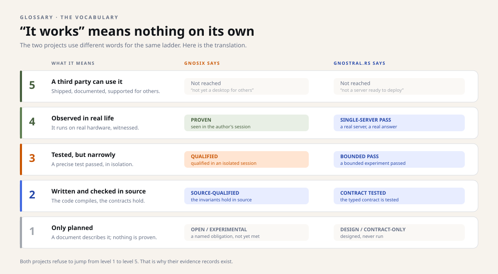

Snapshot of October 29, 2026. This dossier describes the four repositories as they stood that day; the projects have moved on since, and the repositories are the authority. Underlined links lead to the sources, frozen at their state of that day.
Method
What a “PASS” means
In these repositories, a PASS says only one thing: the precise test, written before the run, passed. It says nothing about stability, security or your machine. This page explains how that modesty is built.
Four gestures, in all four repositories #
The four projects share neither a language nor a trade. Yet they repeat the same four gestures, each in its own way: write the gate before the run, keep a receipt after, take a fingerprint of what was measured, and keep the failure when the run fails.
| Gesture | gnosix | gnostral.rs | Calix | in.gnu6 |
|---|---|---|---|---|
| A gate written before | The CI contract, to pass before any publication. | Thresholds declared in advance: at least ×1.1, and ±128 MiB of memory after shutdown. | The navigation contract, published before its implementation (v0.2.5). | The CUDA-05F protocol, pre-registered before the runs. |
| A receipt after | A level of proof published for each surface. | One JSON receipt per quest, answer by answer. | Release notes and an audit of space, figures included. | A ratification receipt for each of the sixteen milestones. |
| A fingerprint | A SHA-256 manifest of each public projection. | The exact fingerprints of the measured model and binary. | An archive and its SHA-256 fingerprint for each release. | The published fingerprint of the raw endurance file. |
| A failure kept | The remaining Wayland blockers, written down on October 12. | The first Q-010 run, at +196 MiB, marked not qualified. | The case that fails at 560 pixels, kept in the tests. | Three failed CUDA-05F acquisitions, archived without reinterpretation. |
One ladder, several vocabularies #
Each repository names its levels of proof its own way: PROVEN and QUALIFIED for gnosix, BOUNDED PASS and SINGLE-SERVER PASS for gnostral.rs, fifteen quest states for in.gnu6, a status table that “overrides any more optimistic document” for Calix. Under the words, the same question: how far does the evidence go?

What no PASS says #
- Duration. A 125-second run says nothing about a week of use.
- The adversary. A functional test does not prove an attacker will not get through.
- Your machine. The figures come from one precise configuration; they do not travel.
- The product. A series of PASSes does not make software ready for others; that is a separate gate, still closed for all four.
The right to say “unknown” #
The last gesture is the rarest: refusing to guess. gnosix refuses an action when the desktop's state is unknown or stale. gnostral.rs writes “unknown” rather than a plausible value. Calix refuses a document whose version it does not know, instead of showing half of it. in.gnu6 leaves the priority of side quests to the human operator, instead of deciding it alone.
To see the method at work on a real figure, follow Verify a figure yourself; to see it over time, the month's timeline.